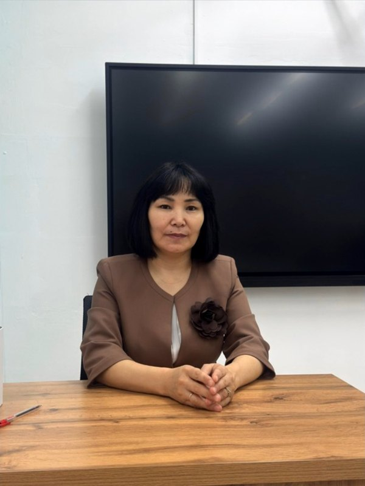
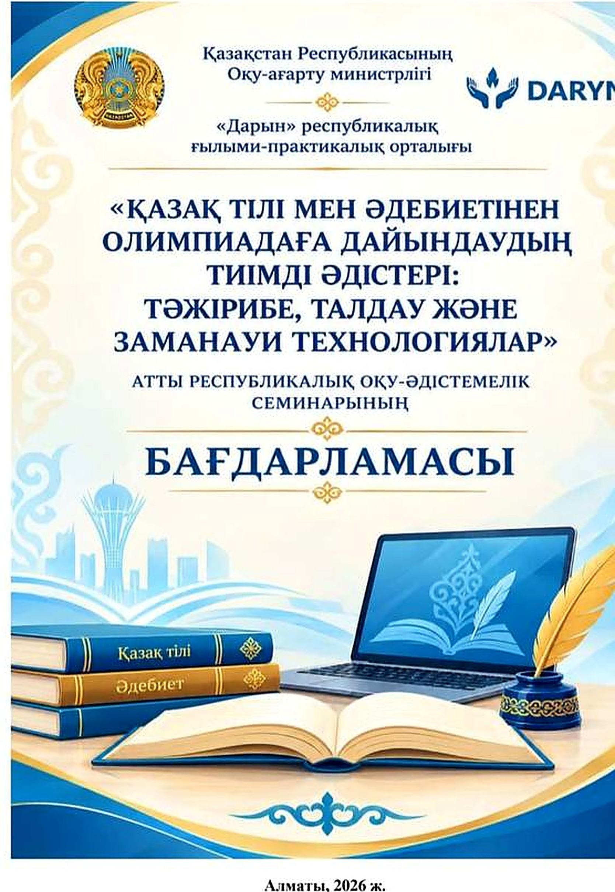
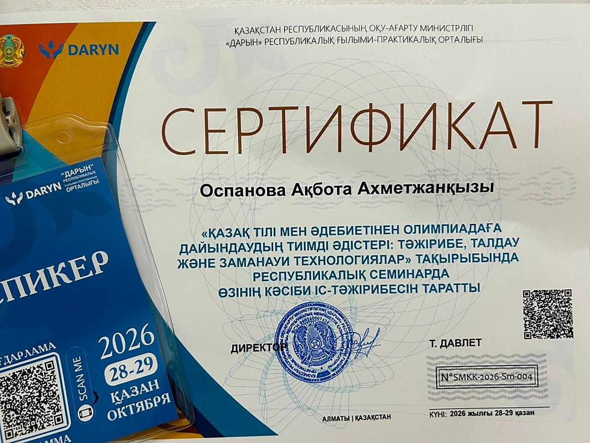

Оқу бағдарламасы оқушыдан көркем мәтінді талдап, бағалап, өз мәтінін жасауды талап етеді. Ал сабақтағы цифрлық ресурстар бытыраңқы, тапсырмалар көбіне репродуктивтік деңгейде.
Тану – Талдау – Талқылау – Туындату кезеңдері және оларды біріктіретін екі көлденең қабат. Шеңбердің бөлігін басыңыз.
Бес авторлық шешім.
Әр сыныпқа жеке сайт: сабақ барысы, ҚМЖ, интерактивті ойындар, оқулық көрсеткіші, Сөздікқор боты, педагог құралдары. Тегін хостинг, кез келген құрылғыда жұмыс істейді.
Модель әдебиетпен шектелмейді: сол «бір дерек көзі» қағидасы мен интерактивті форматтар қазақ тілі, олимпиадаға даярлау және тәрбие сағаттарында да қолданылған.
«Bilim Hub» платформаларын сабақта қолданған мұғалімдердің бейнепікірі.


Қатысушылардың кері байланыс сауалнамасынан іріктелген пікірлер.
«Bilim Hub» орталығы: қазақ тілі мен әдебиеті пәні мұғалімдеріне арналған топ. Жаңа сайттар, ҚМЖ, әдістемелік материалдар мен семинар жаңалықтары осында бөлісіледі. QR-кодты телефон камерасымен сканерлеп, топқа қосылыңыз.
Әр әдеби талдау дағдысы оның когнитивтік табиғатына сай интерактивті форматқа аударылған. Төменде бір ойынды өзіңіз байқап көріңіз.
ЖИ тек көмекші құрал. Шешуші сарапшы – педагог (human-in-the-loop). Ереженің 6.8-тармағына сай мәлімет төменде.
Тәжірибелік және бақылау топтары; 4 критерий бойынша диагностика (20 балл), сауалнама, БЖБ/ТЖБ, сабаққа дайындалу уақыты.
Мектептен қалаға, 5–9-сыныптардан 5–11-сыныптарға, әдебиеттен гуманитарлық пәндерге.
Ереженің 6.3-тармағына сай: аннотация, өзектілік, мақсат пен міндеттер, объект пен пән, әдіснама, нәтижелер, практикалық маңыздылық, қорытынды, дереккөздер, қосымшалар.